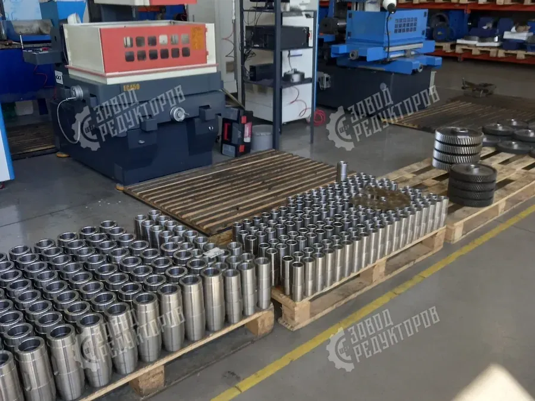
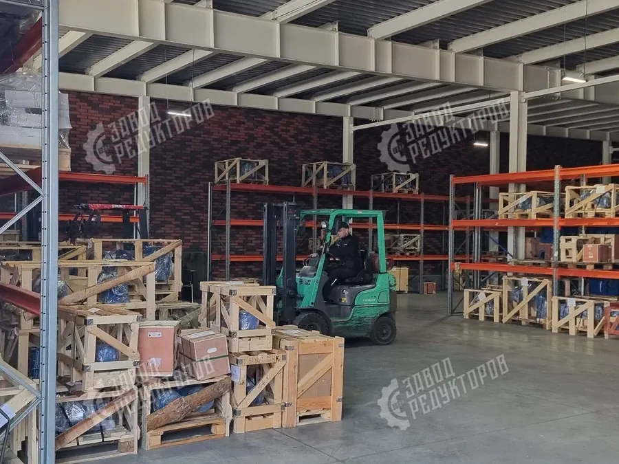
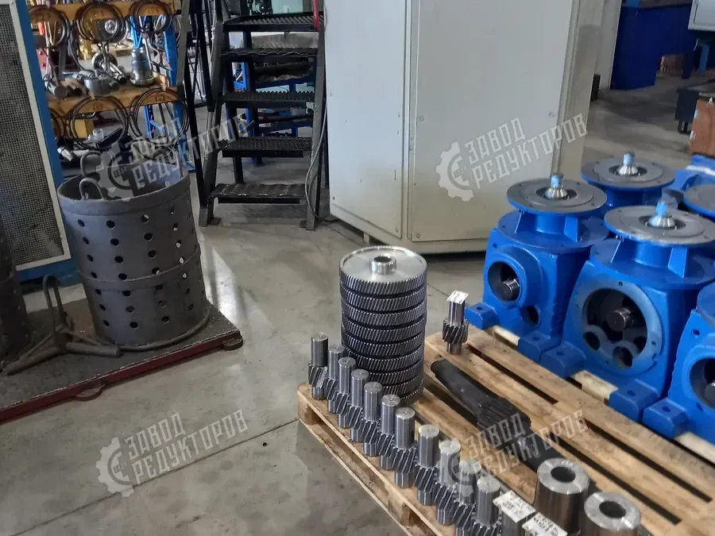
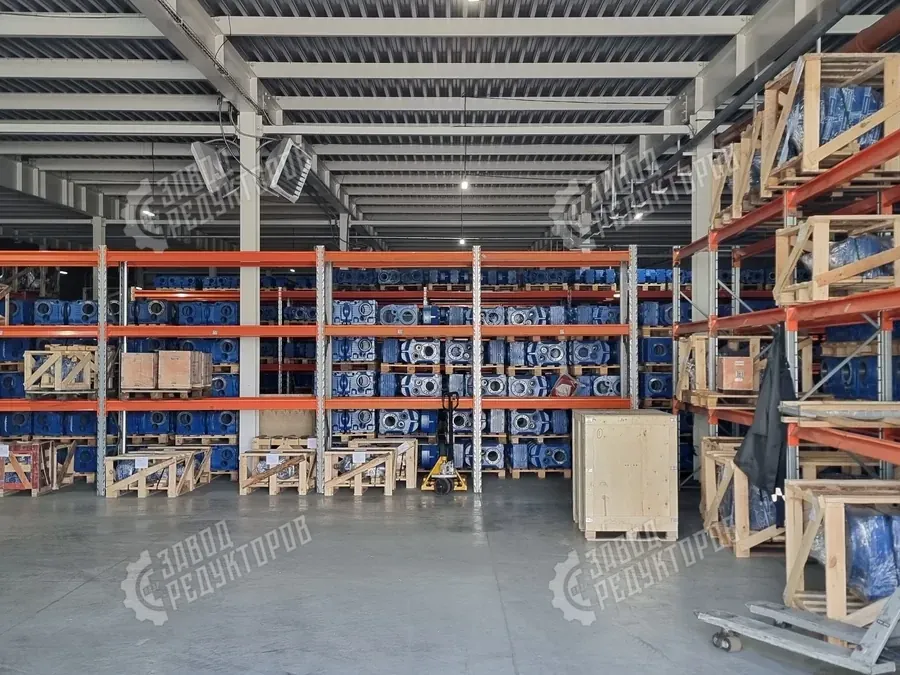

Завод Редукторов (ООО «НИИ АТТ») проектирует и выпускает промышленные редукторы и мотор-редукторы, а также изготавливает точные аналоги импортных приводов. Полный цикл — от расчёта и механической обработки до сборки, испытаний и отгрузки.
Механическая обработка, зубонарезание, термообработка, сборка и испытания — на собственных мощностях, без перепродажи чужих узлов.
Цементация и высокочастотная закалка: твёрдые зубья при упругой сердцевине — ресурс под нагрузкой и в режиме S1.
Шлифуем эвольвентный зуб на редукторах серии Ц2У — точное зацепление, ниже шум и вибрация, плавный ход.
Вдвое выше среднерыночной. При поломке в гарантийный срок — замена редуктора с финансовой ответственностью за качество.
Изготавливаем габаритные и присоединительные аналоги SEW, NORD, Bonfiglioli, Motovario. Переходные фланцы и спецвалы по чертежам.
Складское наличие по ходовым типоразмерам, изготовление под заказ — от 5 рабочих дней, доставка по всей России.
Соответствие продукции подтверждено сертификатами: добровольной сертификации по ГОСТ 31592-2012 (редукторы общемашиностроительного применения), декларацией ЕАС и сертификатом системы менеджмента.
Реальные кадры производства, складского наличия и отгрузки — без рендеров и стоковых картинок.






| Тип редуктора | Краткая характеристика и применение |
|---|---|
| Червячные | Компактный корпус и большое передаточное число в одной ступени, самоторможение. Применяем в конвейерах, подъёмниках и запорной арматуре, где нужен тихий ход и удержание нагрузки. |
| Цилиндрические | Высокий КПД и ресурс при больших крутящих моментах. Базовое решение для приводов транспортёров, мешалок, дробильно-сортировочного и общепромышленного оборудования. |
| Соосные | Входной и выходной валы на одной оси — экономия места при монтаже. Используем в насосных, вентиляционных и компактных приводах с ограниченными габаритами. |
| Цилиндро-конические | Передача с поворотом оси на 90° и высоким КПД. Подходят для приводов с угловой компоновкой: мостовые краны, эскалаторы, тяжёлые конвейерные линии. |
| Планетарные | Максимальный момент на единицу массы и компактность. Изготавливаем для лебёдок, буровой и горнодобывающей техники, поворотных механизмов и тяжёлых приводов. |
| Вариаторы | Плавное бесступенчатое регулирование скорости под нагрузкой. Применяем в дозирующих, упаковочных и технологических линиях, где требуется точная настройка оборотов. |
Оставьте контакты — инженер свяжется в течение 15 минут, рассчитает подбор и пришлёт коммерческое предложение.
Оставить заявкуЗавод Редукторов (ООО «НИИ АТТ») — производитель промышленных редукторов и мотор-редукторов с собственным производством в Челябинске. Проектируем приводы под задачу и ведём прямые поставки конечным потребителям по всей России.
Да. Мы поставляем редукторы производителям оборудования, в том числе серийными партиями, с согласованием чертежей и стабильным качеством от партии к партии. Подробнее об условиях для OEM — на странице производителям оборудования.
Да. Поставляем оригинальные импортные редукторы, а также изготавливаем функциональные аналоги взамен снятых с поставки и недоступных моделей. Это позволяет закрыть задачи импортозамещения по образцу и чертежу — см. раздел импортозамещение.
На продукцию предоставляется гарантия 24 месяца. К каждому изделию прилагается паспорт, а производство и приёмка ведутся в соответствии с требованиями ГОСТ. Полный комплект документов передаётся вместе с поставкой.
Производство ведётся на собственной площадке в Челябинске и охватывает полный цикл — от проектирования и механической обработки до сборки и приёмки готового изделия. Это позволяет контролировать каждый этап и изготавливать редукторы по чертежу заказчика.
Да, мы ведём прямые поставки конечным потребителям по всей России. Доставка организуется транспортными компаниями до вашего города или склада; конкретные условия и сроки согласовываются под каждый заказ.
Да. Проектируем приводы под конкретную задачу и изготавливаем нестандартные исполнения по образцу или чертежу заказчика. Так мы закрываем в том числе задачи импортозамещения, когда нужный редуктор снят с поставки.
Производство и приёмка ведутся в соответствии с требованиями ГОСТ, на каждое изделие оформляется паспорт. Контроль на этапах изготовления обеспечивает стабильное качество от партии к партии, поэтому мы даём гарантию 24 месяца.
Завод Редукторов (ООО «НИИ АТТ») — производитель редукторов и изготовитель мотор-редукторов с собственным производством в Челябинске. Проектируем и выпускаем промышленные приводы, ведём прямые поставки конечным потребителям по всей России без посредников.
Завод работает по полному циклу: расчёт под задачу, механическая обработка, зубонарезание и зубошлифовка, термообработка, сборка и стендовые испытания — всё на собственных мощностях в Челябинске. Инженерный опыт позволяет воспроизводить редкие и снятые с производства модели по образцу и чертежу заказчика.
Мы работаем напрямую с промышленными предприятиями в формате B2B: поставки от изготовителя конечным потребителям без наценки торговых сетей, с понятной документацией и финансовой ответственностью за результат. На каждое изделие предоставляем паспорт, декларацию соответствия ГОСТ и гарантию 24 месяца.
| Полное наименование | ООО «НИИ АТТ» (Завод Редукторов) |
|---|---|
| Город производства | Челябинск, пр-т Ленина, 2 |
| Продукция | редукторы и мотор-редукторы серий EVL, ПР, МР |
| Цикл производства | полный — от проектирования до приёмки |
| География поставок | вся Россия и страны ЕАЭС |
| Гарантия | 24 месяца на всю продукцию |
|---|---|
| Сертификация | соответствие ГОСТ 31592-2012 |
| Документы к поставке | паспорт изделия, декларация ЕАС |
| Контроль качества | стендовые испытания перед отгрузкой |
| Формат работы | прямые поставки B2B без посредников |
Наше предприятие работает по полному циклу: расчёт под задачу, механическая обработка, зубонарезание и зубошлифовка, термообработка, сборка и испытания — всё на собственных мощностях, без перепродажи чужих узлов. Накопленный инженерный опыт позволяет воспроизводить редкие и снятые с производства модели по образцу и чертежу. Мы работаем напрямую с промышленными предприятиями в формате B2B: прямые поставки от изготовителя конечным потребителям без наценки торговых сетей, с понятной документацией и финансовой ответственностью за результат.
Цилиндрические, червячные, планетарные редукторы и мотор-редукторы серий EVL, ПР, МР, а также габаритные и присоединительные аналоги импортных приводов. Подобрать модель по мощности, моменту и режиму работы можно в каталоге редукторов или через быстрый подбор по параметрам.
Гарантия — 24 месяца, вдвое выше среднерыночной. Продукция соответствует ГОСТ, сопровождается паспортом и декларацией. Изготавливаем точные аналоги SEW, NORD, Bonfiglioli и Motovario в рамках импортозамещения приводов.
| Компания | ООО «НИИ АТТ» |
|---|---|
| Город | Челябинск |
| Продукция | редукторы и мотор-редукторы EVL, ПР, МР |
| Гарантия | 24 месяца |
| Поставка | по всей России |